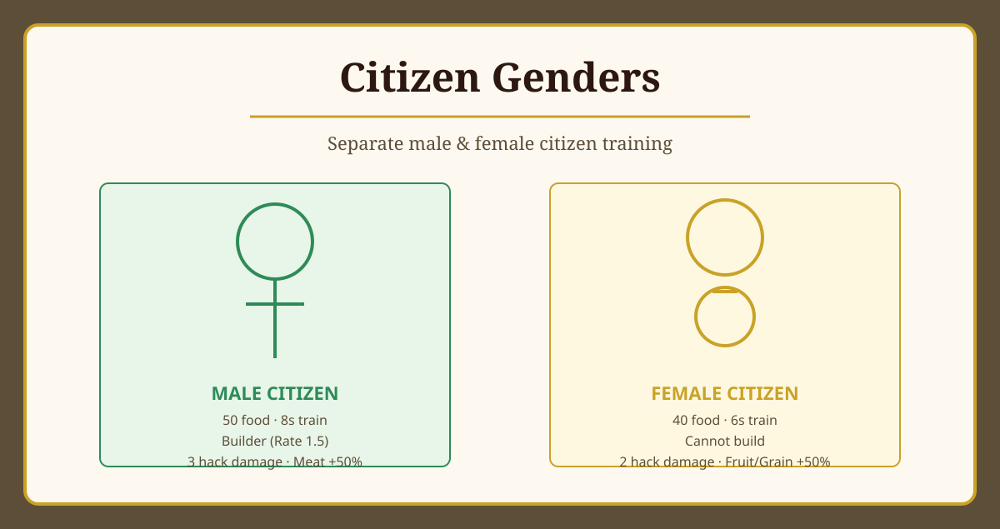

Citizen Genders
⬇️ Descargar Mod"Hombres y mujeres, cada uno con su rol"
Reemplaza el ciudadano civil mixto original por dos unidades separadas: hombre y mujer, cada una con estadísticas, costos y roles diferentes. Las mujeres entrenan más rápido y recolectan mejor fruta y grano. Los hombres construyen y son mejores en combate y recolección de carne.
📝 Descripción Detallada
Citizen Genders modifica la mecánica original de ciudadanos en 0 A.D. En el juego original, al entrenar un civil mixto, el género se asignaba aleatoriamente sin que el jugador pudiera elegir. Este mod separa el entrenamiento en dos botones distintos: uno para ciudadanos hombres y otro para mujeres, permitiendo al jugador decidir qué tipo de unidad producir según sus necesidades estratégicas.
Diferencias clave: Las mujeres cuestan menos alimento (40 vs 50), entrenan más rápido (6s vs 8s) y recolectan mejor fruta y grano, pero no pueden construir. Los hombres construyen (ratio 1.5), hacen más daño cuerpo a cuerpo (3 vs 2) y recolectan mejor carne.
Centro Cívico y Casas: Ambos tipos de ciudadanos se entrenan desde el Centro Cívico. Las Casas también pueden entrenarlos tras investigar las tecnologías correspondientes. Cada partida comienza con 2 hombres y 2 mujeres.
✨ Características Principales
- Dos botones separados: Elige conscientemente entre entrenar hombres o mujeres
- Mujeres más rápidas y económicas: 40 alimento, 6s de entrenamiento, mejores recolectando fruta y grano
- Hombres constructores y combatientes: 50 alimento, 8s de entrenamiento, construyen edificios y hacen más daño
- Centro Cívico y Casas: Se entrenan desde ambas estructuras
- Inicio equilibrado: 2 hombres + 2 mujeres al comenzar la partida
- 15 civilizaciones: Cada civilización tiene sus nombres y variantes específicas (Espartanos más fuertes, Romanos como "Plebeius", etc.)
- Idiomas: Español e Inglés (traducción de nombres específicos)
🎯 ¿Qué Esperar de Este Mod?
Con este mod podrás:
- Elegir estratégicamente qué género entrenar según tus necesidades
- Entrenar mujeres rápidamente para recolectar recursos del bosque o cultivos
- Entrenar hombres para construir tu base y defenderte
- Disfrutar de nombres y roles culturalmente apropiados para cada civilización
- Planificar tu economía con más profundidad y control
📊 Comparativa: Hombre vs Mujer
| Atributo | 👨 Hombre | 👩 Mujer |
|---|---|---|
| Costo | 50 alimento | 40 alimento |
| Tiempo de entrenamiento | 8s | 6s |
| Construir | Sí (Ratio 1.5) | No |
| Daño cuerpo a cuerpo | 3 | 2 |
| Recolección de fruta | 1.0 | 1.5 |
| Recolección de grano | 0.5 | 1.0 |
| Recolección de carne | 1.5 | 1.0 |
🔍 ¿Dónde Encontrarlo en el Juego?
Al seleccionar un Centro Cívico o una Casa, verás dos botones de entrenamiento en la cola de producción: uno para ciudadano hombre y otro para ciudadana mujer.
Los nombres específicos varían según la civilización (ej: "Helot" para Esparta, "Plebeian" para Roma).
⚙️ Información de Compatibilidad
Nota: Los nombres de unidades y civilizaciones usan el sistema de localización de 0 A.D.
📋 Instrucciones de Instalación
- Descarga el mod: Haz clic en el botón de descarga de arriba.
- Busca la carpeta de 0 A.D.: Generalmente está en:
- Windows:
C:\Users\[TuUsuario]\Documents\My Games\0ad\mods - Linux:
~/.local/share/0ad/mods - Mac:
~/Library/Application Support/0ad/mods
- Windows:
- Crea una carpeta para el mod: Crea una carpeta llamada
citizen_gendersdentro de la carpeta "mods". - Copia los archivos: Extrae el archivo descargado y copia su contenido dentro de la carpeta
citizen_genders. - Abre 0 A.D.: Inicia el juego.
- Activa el mod: Ve a Opciones → Mods, busca "Citizen Genders" y actívalo.
- ¡Listo! Ahora podrás entrenar hombres y mujeres por separado.
👥 Créditos
Autor: freddyeleazar
Versión: 0.1.0
Licencia: GPL v2 (como 0 A.D.)